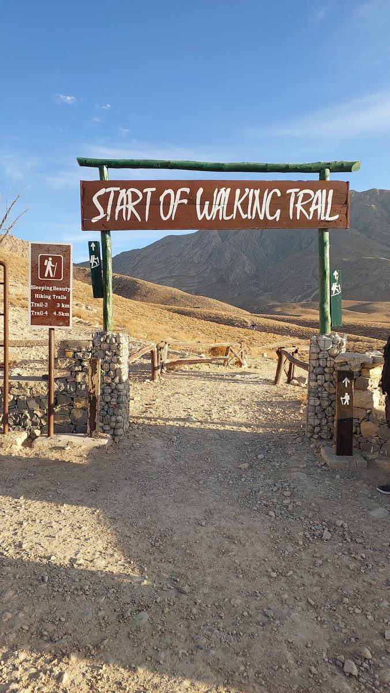
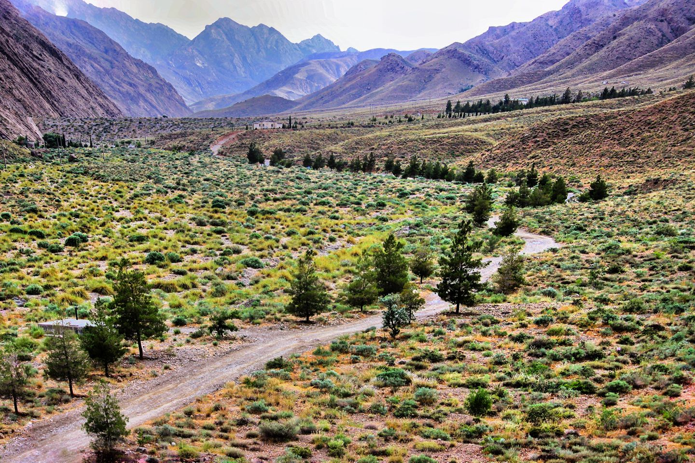

Top three activities to do at Quetta

Hanna-lake
Hanna lake is a lake situated between mountains and store the rainwater from mountains and has a spectacular view.

Sunset view-point
The sunset view point is an interested trail in the surroundings of Quetta and it is said that the mountains there resembles a sleeping beauty.
